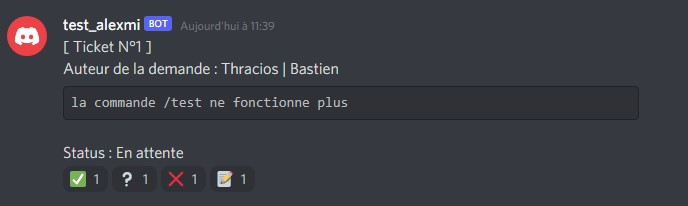
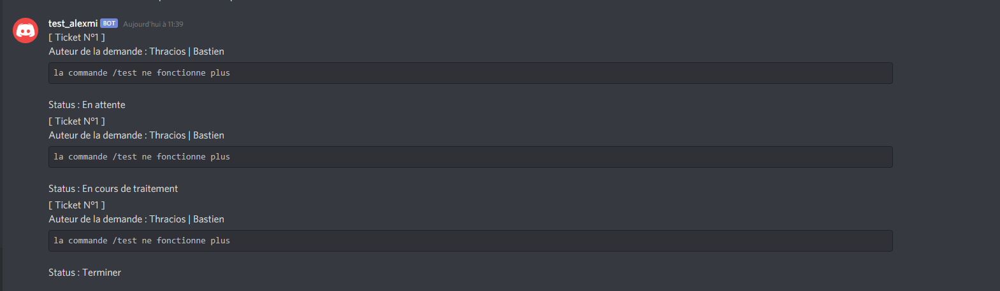

>_Presentation
Je m'appelle Alexandre Cance, j'ai 21 ans.
Je suis étudiant en 2ème année de BTS SIO option SLAM à l'école ITIC Paris.
Je suis passionné d'informatique depuis que j'ai eu mon premier pc
>_Compétences
Langages
- Html/Css
- JavaScript
- PHP
- Python
- Mysql
- Java
Logiciel utiliser
- Visual Studio Code
- Eclipse
- Pycharm
>_Diplome
Diplome
- Brevet des collèges Saint Nicolas Paris – Mention assez bien
- Baccalauréat Professionnel MELEC (Métier de l’électricité et de ses
Environnements Connectés)
Saint Nicolas Paris
Mention bien.
>_Stage
Collège
- Décembre 2015 :
Stage d'observation classe de troisième Maison de la Radio, Paris : Découverte des métiers de l’audiovisuel. - Février 2016 :
Second stage d'observation classe de troisième : AMUNDI, Paris : Découverte des différents services informatiques.
Lycée
- Mais-Juin 2017 :
Classe de seconde : Musée d’Histoire Naturelle, Paris – Direction Maintenance : Installation et maintenance électrique. - Juin 2018 :
Classe de première : RATP - Département Gestion des Infrastructures –Unité Transformation de distribution de l’énergie électrique : Maintenance de disjoncteurs. - Décembre 2018 :
Classe de terminale : Comédie Française, Paris – Direction Technique et Maintenance : Installation et maintenance électrique. - Mars-Avril 2019
Second stage de terminale : AMUNDI, Paris – Infrastructure et réseaux – Datacenter : Installation de serveurs, câblages.
Bts
- Mais-juin 2020
BTS SIO 1ère année : AMUNDI immobilier, Paris : Changement du fonctionnement d'un programme en python (mailbot) - Novembre-Decembre 2020
BTS SIO 2ème année : Out Of Pluto : Développement sur le logiciel Argamato d'un script pour mettre a jour les statistiques des campagnes de newsletter par mail
>_Projet_BTS
Interface Admin Gestion Client
Réalisation d'une interface administrateur pour recenser des clients
Ce site admin a pour but de permettre aux administrateurs
des Maisons des ligues, de recenser leurs clients.

Gestion Personnel
Réalisation d'une application pour gérer les employés de plusieurs ligues
Cette application permet de gérer les employés de plusieurs ligues, d'avoir un administrateur par ligues et permet aux employés de consulter les données sans pouvoir les éditer


>_Projet_Personnel
Bot Discord
Réalisation d'un bot sur le réseaux social Discord
Ce bot est issue d'un projet où je suis bénévole. il est actif sur le discord de ce même projet.
Il permet de faire du suivie d'incident (ticket) et de faire des annonces journaliere automatique
- Exemple de ticket :
- 
- Suivie du ticket par l'auteur de la demande :
- 